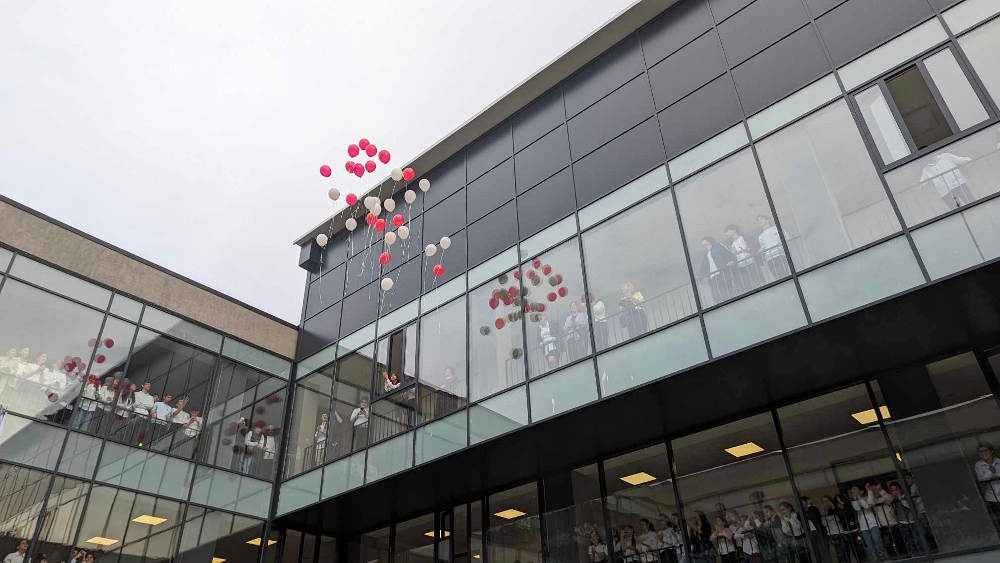

სკოლების მთავარი. სკოლების ამბები. სკოლების საძიებელი. სასკოლო წრეები. მოსწავლეების მშობლებს. მშობელი მშობელს
 ნაძალადევის რაიონში, თემქის მე-10 კვარტალში ახლად აშენებული 138-ე საჯარო სკოლა დღეს საზეიმოდ გაიხსნა.
გიმნაზია „აია-ჯესსის“ მოსწავლეებმა საქართველოს ბავშვთა და ახალგაზრდულ საგუნდო ეროვნულ კონკურსზე საპრიზო ადგილები მოიპოვეს
როგორ იცავენ დრესკოდს და რა შეზღუდვები აქვთ სკოლებს მოსწავლეთა ჩაცმულობის მხრივ – უახლესი ინფორმაცია სკოლებიდან
სკოლა „ჰელიოში“ კალიგრაფიის კონკურსი „ჩემი ხელწერა”ტარდება

მასწავლებელთა რაოდენობა: 101
მოსწავლეთა რაოდენობა: 1858
www.2school.ge აჭარა, ბათუმი bpschooln2@gmail.com ბათუმი, ჯინჭარაძის 19